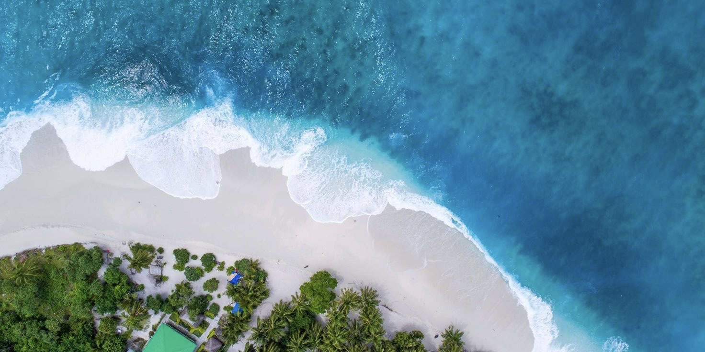

Bali is a province of Indonesia and the westernmost of the Lesser Sunda Islands. East of Java and west of Lombok, the province includes the island of Bali and a few smaller neighbouring islands, notably Nusa Penida, Nusa Lembongan, and Nusa Ceningan. The provincial capital, Denpasar, is the most populous city in the Lesser Sunda Islands and the second-largest, after Makassar, in Eastern Indonesia. Bali is Indonesia's main tourist destination, with a significant rise in tourism since the 1980s. Tourism-related business makes up 80% of its economy.
